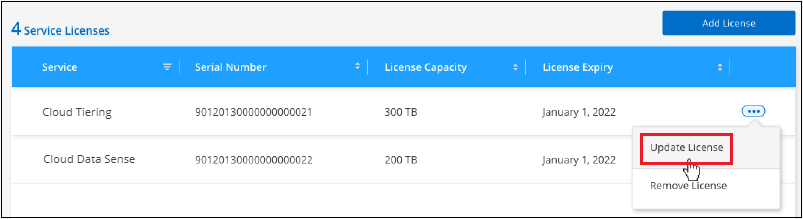

版本資訊
版本資訊
設定 BlueXP 分類的授權
 建議變更
建議變更
BlueXP 分類在 BlueXP 工作區中掃描的前 1 TB 資料可免費使用 30 天。NetApp的BYOL授權或雲端供應商的市場訂閱、必須在該點之後繼續掃描資料。
在閱讀更多內容之前、請先提供幾個附註：
-
如果您已在雲端供應商的市場中訂閱 BlueXP 隨用隨付（ PAYGO ）訂閱、則您也會自動訂閱 BlueXP 分類。您不需要再次訂閱。
-
BlueXP 分類（ Data Sense ）自帶授權（ BYOL ）是一種 _ 浮動 _ 授權、您可以在計畫掃描的工作區中的所有工作環境和資料來源中使用。BlueXP 數位電子錢包中有有效的訂閱。
-
掃描的資料量是根據邏輯檔案大小來計算、而沒有任何儲存效率。
30 天免費試用
BlueXP 分類可在 BlueXP 工作區中掃描高達 1 TB 的資料、並可免費試用 30 天。您必須向 NetApp 購買 BYOL 授權、或向雲端供應商的市場註冊訂閱、才能在該點之後繼續掃描資料。
您可以隨時訂閱、而且在30天試用結束或資料量超過1 TB之前、將不會向您收取任何費用。您可以隨時從 BlueXP 分類治理儀表板查看掃描的資料總量。而且「立即訂閱」按鈕可讓您在準備就緒時輕鬆訂閱。

使用 BlueXP 分類 PAYGO 訂閱
雲端供應商的隨用隨付訂閱可讓您授權使用 Cloud Volumes ONTAP 系統和許多 BlueXP 服務、例如 BlueXP 分類。您將向雲端供應商支付單一訂閱中每小時掃描的資料 BlueXP 分類金額。
訂閱可確保在免費試用結束後、服務不會中斷。試用結束時、您將根據掃描的資料量、每小時收取一次費用。在免費試用期間、您將不會從訂閱中收取費用。
這些步驟必須由擁有 Account Admin 角色的使用者完成。
-
在BlueXP主控台右上角、按一下「設定」圖示、然後選取*認證*。

-
按一下 * 認證 * 、然後尋找 AWS 執行個體設定檔、 Azure 託管服務識別或 Google Project 的認證。
訂閱必須新增至執行個體設定檔、託管服務識別或Google Project。否則無法充電。
如果您已經有 BlueXP 訂閱（如下所示適用於 AWS ）、那麼您就已經設定好了、別無所需。

-
如果您尚未訂閱、請按一下動作功能表、然後按一下 * 關聯訂閱 * 。

-
選取現有的訂閱、然後按一下「經銷」、或按一下「新增訂閱」、然後依照步驟進行。
下列影片說明如何建立關聯 "AWS Marketplace" 訂閱AWS訂閱：
下列影片說明如何建立關聯 "Azure Marketplace" 訂閱Azure：
下列影片說明如何建立關聯 "Google Cloud Marketplace" 訂購GCP：
使用年度合約
購買年度合約、每年支付 BlueXP 分類費用。提供 1 年、 2 年或 3 年的條款。
如果您有市場的年度合約、則所有 BlueXP 分類資料掃描都會根據該合約收費。您無法與BYOL混搭一年一度的市場合約。
-
Azure ： "如需價格詳細資料、請前往BlueXP Marketplace產品"。
-
Google Cloud ：請聯絡您的 NetApp 銷售代表以購買年度合約。合約可在Google Cloud Marketplace以私人優惠形式提供。NetApp 與您分享私人優惠後、您可以在 BlueXP 分類啟動期間、從 Google Cloud Marketplace 訂閱年度方案。
使用 BlueXP 分類 BYOL 授權
NetApp自帶授權、提供1年、2年或3年期限。BYOL BlueXP 分類（ Data Sense ）授權是一個 _ 浮動 _ 授權、其總容量由 * 所有 * 的工作環境和資料來源共享、讓初始授權和續約變得更簡單。
如果您沒有 BlueXP 分類授權、請聯絡我們購買：
-
mailto：ng-contact-data-sense@netapp.com？Subject =授權[傳送電子郵件以購買授權]。
-
按一下BlueXP右下角的聊天圖示、申請授權。
或者、如果您沒有使用未指派的 Cloud Volumes ONTAP 節點型授權、您可以將其轉換為具有相同美元對等和相同到期日的 BlueXP 分類授權。 "如需詳細資料、請前往此處"。
您可以使用 BlueXP 數位錢包來管理 BlueXP 分類 BYOL 授權。您可以新增授權、更新現有授權、以及從 BlueXP 數位錢包檢視授權狀態。
取得 BlueXP 分類授權檔案
購買 BlueXP 分類（ Data Sense ）授權後、您可以輸入 BlueXP 分類序號和 NetApp 支援網站 （ NSS ）帳戶、或上傳 NetApp 授權檔案（ NLF ）、在 BlueXP 中啟動授權。下列步驟說明如果您打算使用NLF授權檔案、該如何取得該檔案。
如果您已在內部部署網站中沒有網際網路存取權的主機上部署 BlueXP 分類、表示您已在中部署 BlueXP Connector "私有模式"、您必須從連線網際網路的系統取得授權檔案。使用序號啟動授權、而 NSS 帳戶無法用於私有模式安裝。
開始之前、您必須先取得下列資訊：
-
BlueXP 分類序號
請從您的銷售訂單中找出此號碼、或聯絡客戶團隊以取得此資訊。
-
BlueXP 帳戶 ID
您可以從BlueXP頂端選取「帳戶」下拉式清單、然後按一下帳戶旁的「管理帳戶」、即可找到您的BlueXP帳戶ID。您的帳戶ID位於「總覽」索引標籤。若為無法存取網際網路的私人模式網站、請使用 account-DARKSITE1 。
-
登入 "NetApp 支援網站" 然後按一下*系統>軟體授權*。
-
輸入您的 BlueXP 分類授權序號。

-
在 * 授權金鑰 * 欄下、按一下 * 取得 NetApp 授權檔案 * 。
-
輸入您的BlueXP帳戶ID（在支援網站上稱為「租戶ID」）、然後按一下*提交*下載授權檔案。

將 BlueXP 分類 BYOL 授權新增至您的帳戶
購買 BlueXP 帳戶的 BlueXP 分類（ Data Sense ）授權後、您必須將授權新增至 BlueXP 、才能使用 BlueXP 分類服務。
-
在BlueXP功能表中、按一下*管理>數位錢包*、然後選取*資料服務授權*索引標籤。
-
按一下「 * 新增授權 * 」。
-
在_新增授權_對話方塊中、輸入授權資訊、然後按一下*新增授權*：
-
如果您有 BlueXP 分類授權序號、而且知道您的 NSS 帳戶、請選取 * 輸入序號 * 選項、然後輸入該資訊。
如果下拉式清單中沒有您的 NetApp 支援網站帳戶， "將新增至BlueXP的NSS帳戶"。
-
如果您有 BlueXP 分類授權檔案（安裝在黑暗的網站中時需要）、請選取 * 上傳授權檔案 * 選項、然後依照提示附加檔案。

-
BlueXP 會新增授權、讓 BlueXP 分類服務處於作用中狀態。
更新 BlueXP 分類 BYOL 授權
如果您的授權期限即將到期、或您的授權容量已達到上限、則會在「分類 UI 」中通知您。

此狀態也會出現在 BlueXP 數位錢包和中 "通知"。

您可以在 BlueXP 分類授權過期前更新、使您不中斷存取掃描資料的能力。
-
按一下BlueXP右下角的聊天圖示、即可針對特定序號、要求延長您的術語或額外的Cloud Data Sense授權容量。您也可以傳送電子郵件至mailto：ng-contact-data-sense@netapp.com®Subject=Licensing[寄送電子郵件要求更新授權]。
在您支付授權費用並向 NetApp 支援網站 註冊之後、 BlueXP 會自動更新 BlueXP 數位錢包中的授權、而「資料服務授權」頁面則會在 5 到 10 分鐘內反映變更。
-
如果BlueXP無法自動更新授權（例如、安裝在暗點）、則您需要手動上傳授權檔案。
-
您可以 從NetApp支援網站取得授權檔案。
-
在 BlueXP 數位電子錢包頁面上的 Data Services Licenses 標籤中、按一下
 如需您要更新的服務序號、請按一下*更新授權*。
如需您要更新的服務序號、請按一下*更新授權*。
-
在「更新授權」頁面上傳授權檔案、然後按一下「更新授權」。
-
BlueXP 會更新授權、讓您的 BlueXP 分類服務繼續處於作用中狀態。
BYOL 授權考量
使用 BlueXP 分類（ Data Sense ） BYOL 授權時、當您正在掃描的所有資料大小接近容量上限或接近授權到期日時、 BlueXP 分類 UI 和 BlueXP 數位錢包 UI 中會顯示警告。您會收到下列警告：
-
當您正在掃描的資料量達到授權容量的80%時、當您達到限制時、也會再次顯示
-
授權到期前 30 天、授權到期後再一次
當您看到這些警告時、請使用BlueXP介面右下角的聊天圖示來續約授權。
如果您的授權過期、或您已達到 BYOL 限制、 BlueXP 分類仍會繼續執行、但儀表板的存取會遭到封鎖、因此您無法檢視任何掃描資料的相關資訊。如果您想減少所掃描的磁碟區數量、使容量使用量可能低於授權限制、則只有「_Configuration」頁面可用。
一旦您續約 BYOL 授權、 BlueXP 會自動更新 BlueXP 數位錢包中的授權、並提供所有儀表板的完整存取權。如果BlueXP無法透過安全的網際網路連線存取授權檔案（例如、安裝在暗點）、您可以自行取得該檔案、然後手動上傳至BlueXP。如需相關指示、請參閱 如何更新 BlueXP 分類授權。

|
如果您使用的帳戶同時擁有 BYOL 授權和 PAYGO 訂閱、則 BlueXP 分類 _ 不會在 BYOL 授權到期時切換至 PAYGO 訂閱。您必須續約BYOL授權。 |